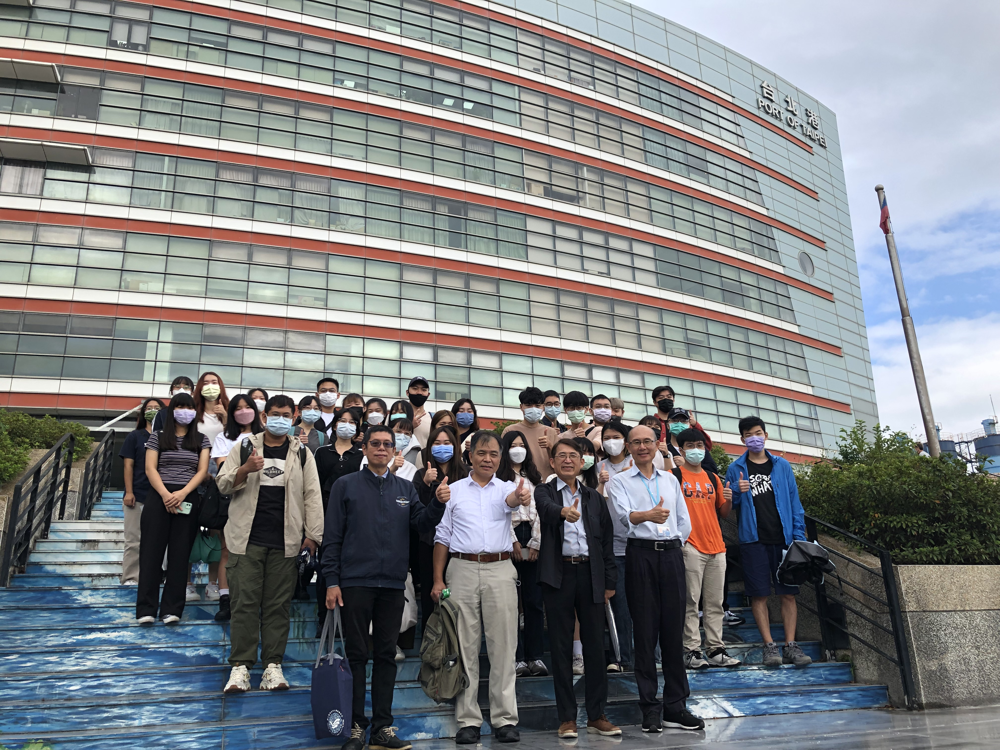
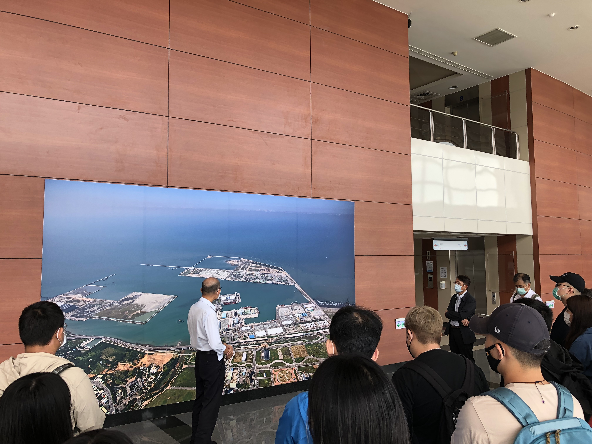

111上學期補助課程內容
課程名稱：國際運輸危險品管理（選修，2學分）
授課週別：111-1師資與課程（點擊顯示）▼
| 週別 | 日期 | 業師 | 單元 |
|---|---|---|---|
| 1 | 9/15 | 劉詩宗 | 課程介紹及公約,規範概述 |
| 2 | 9/22 | 陳柏宏 | 危險品概論(GHS&SDS) |
| 3 | 9/29 | 徐愉晨 | 危險品介紹(9大類&危害辨識) |
| 4 | 10/6 | 陳柏宏 | 危險品管理相關法規介紹 |
| 5 | 10/13 | 陳柏宏 | 危險品物流專業名詞解釋 |
| 6 | 10/20 | 陳柏宏 | 危險品貨物包裝物及包裝、運輸規定 |
| 7 | 10/27 | 陳柏宏 | 包裝物及IBC,LP,BK,TANK標準規格及功能測試 |
| 8 | 11/3 | 沈志耘 | 港區危險品作業手冊說明 |
| 8 | 11/4 | 黃亮維 | 危險物品運送相關規定(法規篇) |
| 9 | 11/10 | 劉詩宗 | 港區海運危險品管理作業流程機制 |
| 9 | 11/11 | 黃亮維 | 運輸安全管理規範(實務篇) |
| 10 | 11/17 | 沈志耘 | 貨櫃碼頭危險品裝卸與進儲實務 |
| 10 | 11/18 | 黃亮維 | 危險品運送案例分享 |
| 11 | 11/24 | 陳柏宏 | 危險品安全管理系統介紹 |
| 12 | 12/1 | 葉建明 | 總複習及危險品專責管理人員考照 |
授課時間：每週四18:30-20:15 (教室:航管大樓509)
授課師資：劉詩宗、陳柏宏、沈志耘、葉建明、黃亮維
授課方式：自製講義、課堂分組討論、實務案例探討
專題實作：
校外參訪：
臺北港營運處 2022/10/7


台北港貨櫃碼頭股份有限公司
好像還沒有照片欸
好像還沒有照片欸